Positional Arguments for Named Arrows
New Feature. All named arrows (e.g., hill[], GRN[], MM[], etc.) have positional arguments in addition to
the Cellerator rule arguments. Use of purely positional arguments speeds the processing of large models.
User-Defined Arrows
New Feature.Users can define both regulatory (only the concentrations of the species on the right side of the arrow are affected) and
stoichiometric (concentrations on both sides of the arrow are affected) arrows "on-the-fly." Cellerator allowed the first, but not the second. For details see "User Defined Arrows".
Shorthand for entering mass action arrows
New Feature. Mass action arrows can be entered using either \[ShortRightArrow] or "->" (a "dash" character followed by the "greater than" character).
Mathematica does not provide a shorthand for \[ShortRightArrow] so it either had to be spelled out in Cellerator or entered from a palette.
-
Improved Palette Design
New Feature. A new heirarchical palette design has been introduced. The new palettes have "help" equations that summarize
the forms generated by the various arrows.
Regulatory Hill Functions
Feature Removed.In Cellerator regulatory Hill Functions are implemented as:
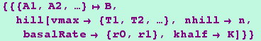
which is interpreted as
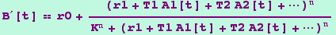
In xCellerator, only one basal rate (the one corresponding to r1, above) is allowed.
The other basal rate (r0 above) should be entered as a mass action reaction. Therefore the above reaction syntax will be interpreted as:
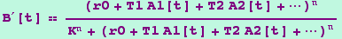
New Feature. xCellerator also has an additional parameter that can be used to multiply through the entire reaction. The corresponding xCellerator reaction is:
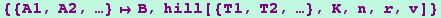
which is interpreted as
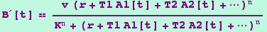
Some confusion could arise because the Cellerator option vmax
is interpreted as T in xCellerator.
Catalytic Hill Functions
Additional Features:
- Vectoral Combination of Hill Functions
The reactions
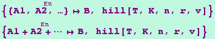
which do not exist in Cellerator are interpreted as:
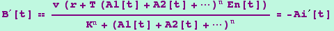
- Additive Combination of Hill Functions is unchanged
The reactions
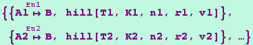
are still interpreted as:
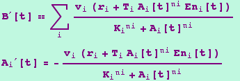
- Multiplicative Combination of Hill Functions
The reaction
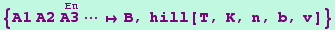
which does not exist in Cellerator is interpreted as:
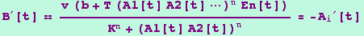